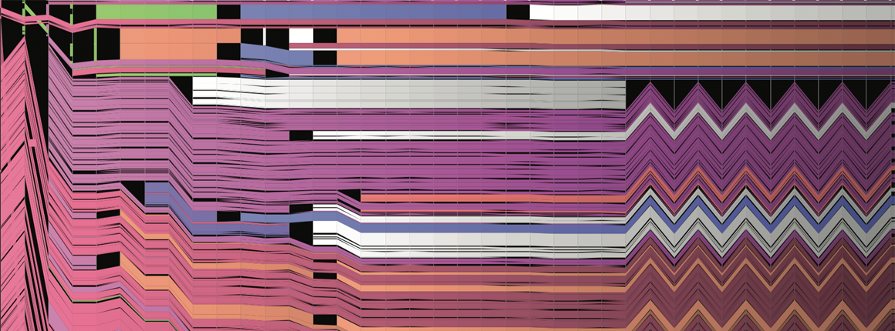

Resources

Visualization of Wikipedia edits (Viégas and Wattenberg)
Useful books
- Required textbook: Code as Creative Medium: A Handbook for Computational Art and Design (Levin and Brain)
- Optional: The Nature of Code (Shiffman). Free online book on coding and simulations of nature.
- Optional: Design for Information: An Introduction to the Histories, Theories, and Best Practices Behind Effective Information Visualizations (Meirelles)
- Optional: Generative Design, Creative Coding on the Web (Gross et al.)
- Optional: Living in Data: A Citizen’s Guide to a Better Information Future (Thorp)
p5.js
We will be using p5.js, an open-source framework specifically tuned for artists, as our medium. The framework is built on Javascript, meaning that it lends itself to web deployment, and that you'll be gaining skills in one of the most widely used languages. Another advantage is that p5.js comunity is large and friendly, and has created wonderful documentation.Online resources include:
- P5.js site (community, tutorials, etc.)
- p5.js Web Editor Online editor
- OpenProcessing Vast online library of p5.js examples.
- Generative Design, Creative Coding on the Web
- Coding Train (videos, tutorials, etc. on coding for artists)
The critique process
In-class critique sessions are important to the course. If you're new to the process, you might find these links helpful. Although some of these links are focused on graphic design, they're still relevant.- Excellent 3-minute video introduction. (Lieu, Huang, Welch, and Roonan)
- An AIGA guide to receiving and giving feedback.
- Feldman's model of art criticism
- Getty Museum handout Focuses on basic visual elements.
Related courses
These sites provide different perspectives on some of the same material we cover. They also contain further resources, examples, and data sets.- Interactivity and Computation. CMU course aimed at art majors.
- Creative Coding NYU course, with a coding focus.
- Code as Medium RISD perspective, excellent resource list
- Playing with Data Princeton workshop with good p5.js and data set examples.
Data sources
Data.gov
Census.gov
Dataverse Network
Climate Data Sources
Climate Station Records
CDC Data (Disease Control and Prevention)
World Bank Catalog
Free SVG Maps
UK Office for National Statistics
StateMaster
Quandl